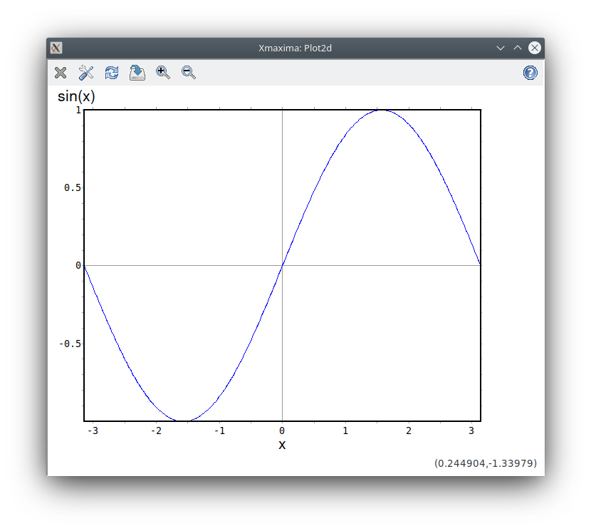

Xmaxima Manual
Jaime E. Villate
Copyright © 2006 Jaime E. Villate
This program is free software; you can redistribute it and/or modify
it under the terms of the GNU General Public License as published by
the Free Software Foundation; either version 2 of the License, or
(at your option) any later version.
This program is distributed in the hope that it will be useful,
but WITHOUT ANY WARRANTY; without even the implied warranty of
MERCHANTABILITY or FITNESS FOR A PARTICULAR PURPOSE. See the
GNU General Public License for more details.
You should have received a copy of the GNU General Public License
along with this program; if not, write to the Free Software
Foundation, Inc., 51 Franklin Street, Fifth Floor, Boston,
MA 02110-1301, USA.
Xmaxima is a graphical interface for Maxima, written in
Tcl/Tk. It also provides the xmaxima plotting program for
Maxima (formerly called ’openmath’), which can do some of the plots done by Maxima’s default plotter
(gnuplot) and a few more that gnuplot cannot do.
This manual was written for Xmaxima - the screenshots are from the Linux version of Maxima 5.43.2. Some familiarity
with Maxima is assumed. There is a separate reference manual for
Maxima, which can be browsed and studied from Xmaxima.
1 Command-line options
The executable program, xmaxima, accepts the following command-line
options:
--help-hDisplays a brief usage summary.
--url siteStart Xmaxima’s browser with the page at the URL ‘site’
--use-version ver-u verLaunch version ‘ver’ of Maxima.
--lisp flavor-l flavorUse the lisp implementation ‘flavor’ of Maxima.
--lisp-options lisp-options-X lisp-optionsOptions to be given to the underlying Lisp.
Option lines containing spaces have to be
quoted to be passed to the lisp as a whole.
2 Xmaxima Window
By default, Xmaxima creates two windows, a command window, where all
the commands for Maxima will be entered and the output returned by
Maxima will be printed.
The second window is Xmaxima’s browser; it is used to show a quick
primer, a copy of the Maxima manual and any other HTML you might want to
download from the Web.

The cursor is the small vertical bar that blinks in the text window. The
text that is currently being written in the text window and which could
be submitted to Maxima for evaluation is rendered in green. The text
sent back by Maxima is rendered in black, and the text that has been
previously entered by the user and that was already evaluated by Maxima
is rendered in blue.
You can also choose different types and sizes for the fonts, in the
section ‘Preferences’ of the Options menu; those settings
will be saved for future sessions.
3 Entering commands
Most commonly, you will enter Maxima commands in the last input line
that appears on the text Window. That text will be rendered in green.
If you press enter, without having written a command-termination
character (either ‘;’ or ‘$’) at the end, the text will remain
green and you can continue to write a multi-line command. When you type
a command-end character and press the enter key, the text will become
blue and a response from Maxima should appear in black. You can also use
the key combination Ctrl-j to move to a new line without sending
the input for Maxima evaluation yet. If you want to clear all the
current input (in green), even if it spans several lines, use the key
combination Ctrl-u.
If you move the cursor over the (%i1) input label, or any other
label or output text (in black), you will not be able to type any text
there; that feature will prevent you from trying to enter a command in
the wrong place, by mistake. If you really want to insert some
additional text to modify Maxima’s output, and which will not be
interpreted by Maxima, you can do that using cut and paste (we will
cover that later).
You can also write a new input command for Maxima on top of a previous
input line (in blue), for instance, if you do not want to write down
again everything but just want to make a slight change. Once you press
the enter key, the text you modified will appear at the last input line,
as if you had written it down there; the input line you modified will
continue the same in Xmaxima’s and Maxima’s memory, in spite of having
changed in the screen.
For example, suppose you entered ‘a: 45;’ in input line
(%i1), and something else in (%i2). You then move up over
the (%i1) a: 45; and change the 5 for an 8. Once you press enter,
you will have in the screen (%i1) a: 48; and (%i3) a: 48;.
But if you write, in the current input line, (%i1) the original
input ‘a: 45;’ will reappear. If you navigate through the input
lines history (see next section), you will also see that the first input
keeps its original value.
3.1 Input lines history
When the cursor is at the end of the last (%i) label, you can use
the key combinations Alt-p and Alt-n to recover the previous
or next command that you entered. If you have just pressed Alt-n,
the ‘next’ command means the first one you entered; but if you
press it again it will mean the second one and so on.
In the same way, if you press Alt-p repeatedly, until you reached
the first input, it will then continue to the last command you
entered. Once you get on the screen the command that you were looking
for, it will appear in green, as if you would have just type it, and you
can modify it before you press enter.
Those two key combinations can also be used to search for a previous
input line with a particular string in it. You first write down the
string to search, and then press Alt-p, to search backwards, or
Alt-n to search forward. Pressing those key combinations
repeatedly will allow you to cycle through all the lines that contain
the string. If you want to try a different string in the middle of the
search, you can delete the current input, type the new string, and start
the search again.
3.2 Cutting and pasting
You can cut or copy a piece of text that you select, from anywhere on
text window; not just from the input lines but also from the output text
in black.
To select the text, you can drag the cursor with the mouse while you
keep its left button depressed, or you can hold the shift key with
one finger, while you move the cursor with the mouse or with the arrow
keys.
Once you have selected the text, you can either cut it, with
Ctrl-x, or copy it to an internal buffer, with
Ctrl-c. Instead of those key combinations, you can also use two
options that appear inside the Edit menu.
The text that has been cut or copied more recently can be pasted
anywhere, even in the output fields, using Ctrl-v or an option in
the Edit menu.
There is a command similar to ‘cut’, called ‘kill’
(Ctrl-k, with two major differences: it only works in input fields
(blue or green) and instead of cutting a text that was selected, it will
cut all the text from the cursor until the end of the input line where
the cursor is. The command ‘Clear input’ (Ctrl-u) is similar
to ‘kill’, but it will cut the whole input line.
To paste the last text that you have cut with either ‘kill’ or
‘clear input’, you should use the ‘yank’ command,
Ctrl-y. If you prefer, you can use entries in the Edit
menu to kill, clear input and yank.
3.3 Other key combinations
There are other useful key combinations, which are not particular to
Xmaxima, but are defined in most Tcl/Tk programs:
- Ctrl-f
The same as the right arrow key.
- Ctrl-b
The same as the left arrow key.
- Ctrl-p
The same as the up arrow key.
- Ctrl-n
The same as the down arrow key.
- Ctrl-a
Moves to the first character in a line (either input or output)
- Ctrl-e
Moves to the last character in a line (either input or output)
- PageUp
Moves one page up
- PageDown
Moves one page down
- Home
Moves the first character in the text window.
- End
Moves to the last character in the text window.
4 Session control
The File menu has sections to manage the work session in
Xmaxima. The ‘Batch file’ and ‘Batch file silently’ sections
are equivalent to Maxima’s commands batch and
batchload, which can also be used in Xmaxima. The advantage of
those two options is that they will open a dialog box that will allow
you to navigate through your directories, until you find the one that
you are looking for.
The ‘Restore Maxima State’ (Alt-i) section allows you to
reload the state of a Maxima session that you saved using the ‘Save
Maxima State to File’ section. The latter saves the state as a Lisp file
using Maxima’s save command.
The ‘Save Maxima Input to File’ (Ctrl-a) section saves each
input line as Maxima code using the Maxima stringout
command. This code can be manually edited in a text editor and loaded
into Xmaxima using ‘Batch file’.
In the menu Edit there is also an option ‘Save console to
file’ which will save the complete contents of the text window into a
file. The input and output will be saved as they look on the screen, and
not as they were originally written.
The option ‘Input prompt’ (Alt-s) will repeat the last input
label sent back by Maxima. That will be useful if you are working on a text
that is not near the last input label and you want to move quickly to
the last input.
Option ‘Interrupt’ (Alt-g) can be used to interrupt a
calculation. And the option ‘Restart’ will end the current
execution of Maxima; a new Maxima process will be invoked, so the input
prompt will start again as (%i1).
5 Xmaxima plots
Xmaxima can be used either directly or from Maxima, to plot 2d
and 3d graphs. From Maxima, it will be used by the functions
plot2d and plot3d, if the option [plot_format,
xmaxima] is used. There are other plotting functions in Maxima that
will only work with the xmaxima plot_format: plotdf, openplot_curves
and graph2d. All those plotting functions are documented in
the Maxima Reference Manual.
A command used to create a 2d xmaxima plot, for example:
plot2d(sin(x), [x, -%pi, %pi], [plot_format, xmaxima]);
creates a window with a menu bar with the following options:
- Close. Destroys the plot window and sends the control back
to Maxima.
- Config. Allows you to change some configurations of the
plot.
- Replot. After configuration changes are made, this
menu option should be selected, to activate the new settings.
- Zoom. Will change the behavior of the mouse so that it will
allow you to zoom in on a region of the plot by clicking with the left
button. Each click near a point magnifies the plot, keeping the center
at the point where you clicked. Holding the Shift key while
clicking, zooms out to the previous magnification.
- Dragging. Holding the right mouse button down while the
cursor is moved, the plot can be moved sideways or up and down.
- Save. Can be used to save a copy of the plot in a Postscript
file.
- Help. Will show a short summary of the plot window options.

By default, each plot will be opened in a new separate window. However,
the plot windows can be embedded into Xmaxima’s text window, by
selecting the option ‘Plot windows -> Embedded’ in the
Options menu, before the plot command is issued.

The 3d plot has a menu very similar to that obtained with
plot2d, but with one additional option: Rotate. Normally,
if you click on the plot, it will not be enlarged, as the 2d
plots. Clicking on the left button, while dragging the mouse, will
rotate the plot, allowing to control two angles: azimuth and elevation.
The menu option ‘Zoom’, will change that default behavior, making
the mouse enlarge the plot, as in the 2d case. To return to the default
behavior (the mouse makes the plot rotate), the Rotate button should be
used.
If Xmaxima is executed from the command line, giving as argument the
name of a file, it will open that file and interpret it as a plot command,
with a syntax specific of Xmaxima. The graph generated by the commands
in the file will be plotted in a plot window, and the main window of
Xmaxima will not be opened and no communication with Maxima will be
established. An example of the contents of a file that can be passed
directly to Xmaxima is the following:
plot2d -xfun "sin(A*x);cos(x)" -yradius 10
-sliders {A=1:6} -parameters {A=1}
that file will generate a plot of a cosine function with fixed period,
and a sine function with a period that can be changed by moving the
slider that appears on the bottom.

the sliders option of xmaxima is one feature that cannot be accessed
directly from plot2d in Maxima. Other examples of input
files for xmaxima are the files maxoutNNNN.xmaxima (where NNNN
is the process id (an unique number) of the maxima process, that Maxima
creates; when Maxima is run from the command line, and a plotting
function that involves xmaxima is used, the data is not passed directly
to Xmaxima, but it is rather saved into that file and then xmaxima is
executed with the name of that file as argument.
The strings used in those files must be properly represented as Tcl/Tk
strings.
6 The browser
Xmaxima’s browser is a Web browser. It lacks many features available in
any modern browser, such as style-sheets and tables support. On the
other hand, that browser accepts two additional tags, which are not part
of HTML, but are very useful to pass commands to Xmaxima from the html
page.
One example of that is the Maxima Primer that appears in the browser when
Xmaxima starts. That primer has some fields where you can click to get
the result inside the browser window. The syntax of the two additional
tags is as follows
<eval program=maxima doinsert=0>maxima_command</eval>
<eval program=maxima doinsert=1>command</eval>
<result modified>result</result>
The first form will highlight the given Maxima command, and when the user
double clicks on it, it will be evaluated, but its result will not be
inserted back into the original web page.
The second form will act similarly to the first, but the result from
Maxima will now be inserted back into the Web page, in the next tag
‘result’ that appears in the page. The commands shown in the
eval tags can be edited and reenter.
Some more sample active pages can be found in
https://web.archive.org/web/20190926040445/https://web.ma.utexas.edu/users/wfs/netmath/netmath.html
7 Getting Help
Xmaxima can be used to access Maxima’s documentation in several
different forms. The describe of Maxima should work exactly
as it does in Maxima. The Help menu has a link to the local copy
of the manual, which is distributed with Maxima. In that menu there is
also a link to the Website of Maxima, where some other documentation can be
found.
About This Document
This document was generated on June 2, 2023 using makeinfo.
The buttons in the navigation panels have the following meaning:
| Button |
Name |
Go to |
From 1.2.3 go to |
| [ << ] |
FastBack |
Beginning of this chapter or previous chapter |
1 |
| [ < ] |
Back |
Previous section in reading order |
1.2.2 |
| [ Up ] |
Up |
Up section |
1.2 |
| [ > ] |
Forward |
Next section in reading order |
1.2.4 |
| [ >> ] |
FastForward |
Next chapter |
2 |
| [Top] |
Top |
Cover (top) of document |
|
| [Contents] |
Contents |
Table of contents |
|
| [Index] |
Index |
Index |
|
| [ ? ] |
About |
About (help) |
|
where the Example assumes that the current position is at Subsubsection One-Two-Three of a document of the following structure:
- 1. Section One
- 1.1 Subsection One-One
- 1.2 Subsection One-Two
- 1.2.1 Subsubsection One-Two-One
- 1.2.2 Subsubsection One-Two-Two
- 1.2.3 Subsubsection One-Two-Three
<== Current Position
- 1.2.4 Subsubsection One-Two-Four
- 1.3 Subsection One-Three
- 1.4 Subsection One-Four